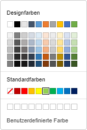
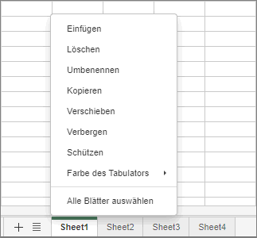

Tabellenblätter verwalten
Standardmäßig enthält eine neu erstellte Tabellenkalkulation ein einzelnes Tabellenblatt. Die einfachste Möglichkeit, ein neues Tabellenblatt in den Tabellenkalkulationseditor einzufügen, besteht darin, auf die Schaltfläche Plus zu klicken, die sich rechts neben den Blattnavigationsschaltflächen in der unteren linken Ecke befindet.
Eine weitere Möglichkeit, ein neues Tabellenblatt hinzuzufügen, ist:
- Klicken Sie mit der rechten Maustaste auf die Blattregisterkarte, nach der Sie ein neues einfügen möchten.
- Wählen Sie die Option Einfügen aus dem Kontextmenü.
Ein neues Tabellenblatt wird nach dem ausgewählten eingefügt.
Um das gewünschte Tabellenblatt zu aktivieren, verwenden Sie die Blattregisterkarten in der unteren linken Ecke jeder Tabellenkalkulation.
Wenn Sie viele Tabellenblätter haben, können Sie das gewünschte mithilfe der Blattnavigationsschaltflächen in der unteren linken Ecke finden.
So löschen Sie ein nicht benötigtes Tabellenblatt:
- Klicken Sie mit der rechten Maustaste auf die Blattregisterkarte, die Sie löschen möchten.
- Wählen Sie die Option Löschen aus dem Kontextmenü.
Das ausgewählte Tabellenblatt wird aus der aktuellen Tabellenkalkulation gelöscht.
So benennen Sie ein vorhandenes Tabellenblatt um:
- Doppelklicken Sie auf die Blattregisterkarte, die Sie umbenennen möchten.
- Geben Sie einen neuen Namen ein und drücken Sie die Eigabetaste.
oder
- Wechseln Sie zu dem Tabellenblatt, das Sie umbenennen möchten.
- Wechseln Sie zur Registerkarte Startseite und klicken Sie auf die Schaltfläche Format.
- Wählen Sie die Option Blatt umbenennen.
- Geben Sie einen neuen Namen ein und drücken Sie die Eigabetaste.
Der Name des ausgewählten Tabellenblatts wird geändert.
So verschieben oder kopieren Sie ein vorhandenes Tabellenblatt:
- Klicken Sie mit der rechten Maustaste auf die Blattregisterkarte, die Sie verschieben möchten.
- Wählen Sie die Option Verschieben oder kopieren aus dem Kontextmenü.
- Wählen Sie die gewünschte Arbeitsmappe über das Dropdown-Menü Tabellenkalkulation aus.
-
Wählen Sie das Tabellenblatt, vor dem Sie das ausgewählte einfügen möchten, oder verwenden Sie die Option Bis zum Ende verschieben, um das ausgewählte Tabellenblatt nach allen vorhandenen zu verschieben.
Oder ziehen Sie einfach die gewünschte Blattregisterkarte und legen Sie sie an einem neuen Ort ab. Das ausgewählte Tabellenblatt wird verschoben.
-
Aktivieren Sie das Kontrollkästchen Kopie erstellen, wenn Sie eine Kopie des verschobenen Tabellenblatts erstellen möchten.
Alternativ können Sie die Taste Strg gedrückt halten und die Blattregisterkarte nach rechts ziehen, um sie zu duplizieren und die Kopie an den gewünschten Ort zu verschieben.
Sie können ein Tabellenblatt auch manuell per Drag-and-Drop von einer Arbeitsmappe in eine andere verschieben. Wählen Sie dazu das Tabellenblatt aus, das Sie verschieben möchten, und ziehen Sie es in die Blattleiste einer anderen Arbeitsmappe. Sie können beispielsweise ein Tabellenblatt aus der Online-Editor-Arbeitsmappe in die Desktop-Arbeitsmappe ziehen:

In diesem Fall wird das Tabellenblatt aus der ursprünglichen Tabellenkalkulation gelöscht.
Derzeit ist es in Desktop Editors unter Linux nicht möglich, Tabellenblätter per Drag-and-Drop in eine neue Arbeitsmappe zu verschieben.
So blenden Sie Tabellenblätter aus, die Sie momentan nicht benötigen:
- Klicken Sie mit der rechten Maustaste auf die Blattregisterkarte, die Sie ausblenden möchten.
- Wählen Sie die Option Ausblenden aus dem Kontextmenü.
oder
- Wechseln Sie zur Registerkarte Startseite und klicken Sie auf die Schaltfläche Format.
- Wählen Sie die Option Ausblenden → Blatt.
So blenden Sie die ausgeblendete Blattregisterkarte wieder ein:
- Klicken Sie mit der rechten Maustaste auf eine beliebige Blattregisterkarte.
- Öffnen Sie die Liste Ausgeblendet und wählen Sie die Blattregisterkarte aus, die Sie einblenden möchten.
oder
- Wechseln Sie zur Registerkarte Startseite und klicken Sie auf die Schaltfläche Format.
- Wählen Sie die Option Einblenden → Ausgeblendete Tabellenblätter und wählen Sie die Blattregisterkarte aus, die Sie einblenden möchten.
Um die Tabellenblätter zu unterscheiden, können Sie den Blattregisterkarten verschiedene Farben zuweisen. Gehen Sie dazu folgendermaßen vor:
- Klicken Sie mit der rechten Maustaste auf die Blattregisterkarte, der Sie eine Farbe zuweisen möchten.
-
Wählen Sie die Option Farbe des Tabulators aus dem Kontextmenü.
Alternativ wechseln Sie zur Registerkarte Startseite → klicken Sie auf die Schaltfläche Format → Registerkartenfarbe.
-
Wählen Sie eine Farbe aus den verfügbaren Paletten aus:

- Designfarben – die Farben, die dem ausgewählten Farbschema der Tabellenkalkulation entsprechen.
- Standardfarben – der Standardfarbsatz.
-
Benutzerdefinierte Farbe – klicken Sie auf diese Beschriftung, wenn die benötigte Farbe nicht in den verfügbaren Paletten vorhanden ist. Wählen Sie den gewünschten Farbbereich, indem Sie den vertikalen Farbregler verschieben, und legen Sie die spezifische Farbe fest, indem Sie die Farbauswahl im großen quadratischen Farbfeld ziehen. Sobald Sie eine Farbe mit der Farbauswahl ausgewählt haben, werden die entsprechenden RGB- und sRGB-Farbwerte in den Feldern auf der rechten Seite angezeigt. Sie können auch eine Farbe auf der Grundlage des RGB-Farbmodells angeben, indem Sie die erforderlichen numerischen Werte in die Felder R, G, B (Rot, Grün, Blau) eingeben oder den sRGB-Hexadezimalcode in das mit dem #-Zeichen gekennzeichnete Feld eingeben. Die ausgewählte Farbe wird im Vorschaufeld Neu angezeigt. Wenn das Objekt zuvor mit einer benutzerdefinierten Farbe gefüllt wurde, wird diese Farbe im Feld Aktuell angezeigt, sodass Sie die ursprüngliche und die geänderte Farbe vergleichen können. Wenn die Farbe festgelegt ist, klicken Sie auf die Schaltfläche Hinzufügen:

Die benutzerdefinierte Farbe wird auf die ausgewählte Registerkarte angewendet und der Palette Benutzerdefinierte Farbe hinzugefügt.
Sie können mit mehreren Tabellenblättern gleichzeitig arbeiten:
- Wählen Sie das erste Tabellenblatt aus, das Sie in die Gruppe aufnehmen möchten.
- Halten Sie die Taste Umschalt gedrückt, um mehrere benachbarte Tabellenblätter auszuwählen, die Sie gruppieren möchten, oder verwenden Sie die Taste Strg, um mehrere nicht benachbarte Tabellenblätter auszuwählen, die Sie gruppieren möchten.
- Klicken Sie mit der rechten Maustaste auf eine der ausgewählten Blattregisterkarten, um das Kontextmenü zu öffnen.
-
Wählen Sie die gewünschte Option aus dem Menü:

- Einfügen – um die gleiche Anzahl neuer leerer Tabellenblätter wie in der ausgewählten Gruppe einzufügen.
- Löschen – um alle ausgewählten Tabellenblätter auf einmal zu löschen (Sie können nicht alle Blätter in der Arbeitsmappe löschen, da die Arbeitsmappe mindestens ein sichtbares Blatt enthalten muss).
- Umbenennen – diese Option kann nur auf jedes einzelne Tabellenblatt angewendet werden.
- Verschieben oder kopieren – um alle ausgewählten Tabellenblätter auf einmal zu verschieben und an der ausgewählten Stelle einzufügen, oder um Kopien aller ausgewählten Tabellenblätter auf einmal zu erstellen und an der ausgewählten Stelle einzufügen.
- Verbergen – um alle ausgewählten Tabellenblätter auf einmal auszublenden (Sie können nicht alle Blätter in der Arbeitsmappe ausblenden, da die Arbeitsmappe mindestens ein sichtbares Blatt enthalten muss).
- Farbe des Tabulators – um allen ausgewählten Blattregisterkarten auf einmal dieselbe Farbe zuzuweisen.
- Alle Blätter auswählen – um alle Tabellenblätter in der aktuellen Arbeitsmappe auszuwählen.
-
Gruppierung von Arbeitsblättern aufheben – um die Gruppierung der ausgewählten Tabellenblätter aufzuheben.
Die Gruppierung von Tabellenblättern kann auch aufgehoben werden, indem Sie auf ein Tabellenblatt doppelklicken, das in der Gruppe enthalten ist, oder indem Sie auf ein Tabellenblatt klicken, das nicht in der Gruppe enthalten ist.
Weitere Informationen zum Schutz von Tabellenblättern finden Sie im folgenden Artikel.